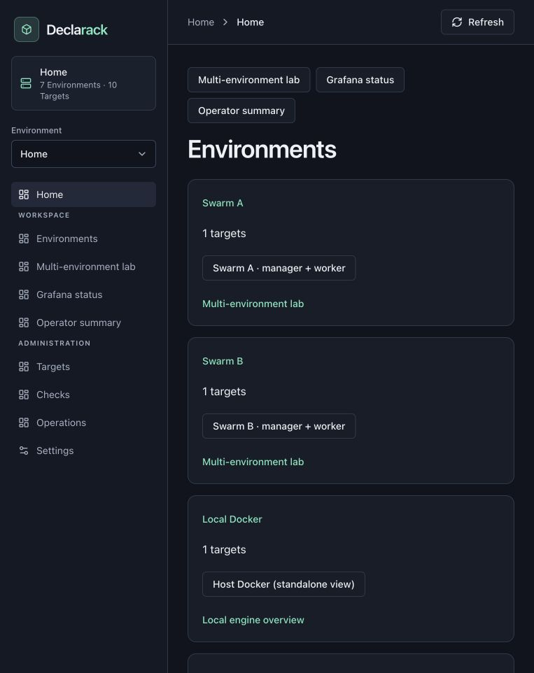
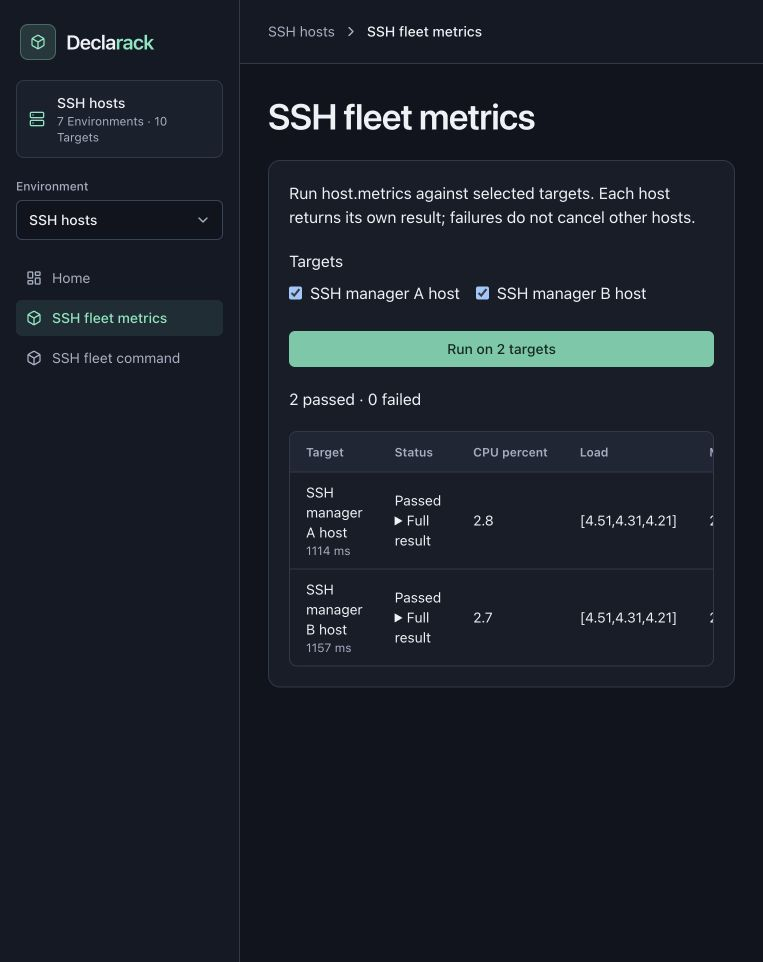

Custom pages across targets¶
A custom page can query several configured targets and combine their responses in one layout. It uses the same named operations, JSONata mappings, shared cards, tables, badges, and detail routes as normal features. No resource-specific JSX or new adapter is needed for sources using existing execution mechanisms.
A feature describes a capability on one target. An environment summary shows feature cards grouped by target. A custom page composes named sources from multiple targets and can calculate values across them.
See the full operations dashboard preset for a Docker + Swarm + Prometheus example. The normal example config also includes a local Engine dashboard.
Page definition¶
Add a pages mapping at the top level of the main system config, alongside
targets, operations, and features:
pages:
workloads:
title: Workload overview
description: Local containers and production services together.
sources:
containers:
label: Local Docker
target: lab
operation: containers.list
services:
label: Production services
target: production
operation: swarm.services.list
cards:
- label: Total workloads
sources: [containers, services]
value: '$count(data.containers) + $count(data.services)'
- label: Running local containers
sources: [containers]
value: '$count(data.containers[State = "running"])'
target: lab
feature: containers
panels:
- title: Production services
sources: [services]
rows: data.services
target: production
feature: services
row_id: ID
limit: 8
columns:
- {label: Service, value: Spec.Name}
- {label: Running, value: ServiceStatus.RunningTasks}
- {label: Desired, value: ServiceStatus.DesiredTasks}
- title: Local containers
sources: [containers]
rows: data.containers
target: lab
feature: containers
row_id: Id
columns:
- {label: Name, value: '$join(Names, ", ")'}
- {label: State, value: State}
This fragment assumes existing lab and production targets enable the
containers and services features respectively. Different target IDs and
custom HTTP operations work in exactly the same way. Pages appear under the
Custom pages sidebar group and have routes such as #/~pages/workloads.
Settings is a global/system page and does not appear in environment navigation.
Sources and capability boundaries¶
Each source declares target, operation, optional fixed inputs, optional
label, and optional manual: true. Target IDs and operation IDs must already
exist. Source inputs are checked against that target's binding schema at config
validation and again by the operation API when executed.
A page does not grant new operation permissions. Sources must be operations used
by enabled features' inventory, details, selectors, or related-resource views.
Operations exposed only as action buttons cannot be used as page sources.
New execution definitions still belong to the deployment-managed operations and
features config, not to the page layout.
These are trusted read conventions, not proof that every custom inventory request is side-effect-free. Define custom inventory/detail operations as reads. There is no ad-hoc request URL or command field in a page source.
Operations marked on_demand, and manual feature inventory operations, are always
manual on custom pages even if manual: false is supplied. For example:
# Add this source only to a page whose production target enables host_metrics.
sources:
metrics:
target: production
operation: host.metrics
inputs: {node_id: all}
manual: true
Manual sources show a Collect control. Opening the page does not start those operations. They may create Swarm jobs only after explicit collection. Queries are independent: a source's inputs are fixed config, not dynamically derived from another source's result.
JSONata context and dependencies¶
Card expressions and panel rows expressions receive this page context:
{
"data": {
"containers": [{"Id": "example", "State": "running"}],
"services": []
},
"sources": {
"containers": {
"state": "ready",
"result": [{"Id": "example", "State": "running"}],
"checked": "2026-11-20T12:00:00.000Z"
},
"services": {"state": "ready", "result": [], "checked": "2026-11-20T12:00:00.000Z"}
}
}
data.NAME contains only the result of a successful current source. Source states
are idle (manual/uncollected), loading, ready, and error. Errors include
error text and a check timestamp. These timestamps are client receipt times,
not necessarily the upstream's measurement time.
Every card/panel can declare a sources dependency list. If omitted, it depends
on all page sources. The item is evaluated only when all its dependencies are
ready. A failed dependency shows unavailable; a manual/uncollected dependency
prompts collection. Unknown results are not turned into a misleading zero. A
successful empty result can correctly produce zero.
Declare dependencies explicitly so a failed monitoring endpoint does not hide an unrelated Docker table. The dependencies gate evaluation; they do not restrict the JSONata context. List all sources that an expression actually uses.
JSONata can join/append data as well as count it. For example, a panel can combine resource names and identify where each came from:
panels:
- title: Workloads from both environments
sources: [containers, services]
rows: >-
$append(
data.containers.{"name": $join(Names, ", "), "environment": "Lab"},
data.services.{"name": Spec.Name, "environment": "Production"}
)
wide: true
columns:
- {label: Name, value: name}
- {label: Environment, value: environment}
Columns evaluate against each selected row, not the whole page context. Normalize
fields in the rows expression before presenting records from dissimilar APIs.
Cards and tables¶
Cards accept label, JSONata value, optional JSONata caption/tone, sources,
and optional static target/feature navigation. A tone of destructive highlights
an unhealthy count. A link requires a feature enabled on that destination target.
Panels accept title, JSONata rows, columns, sources, limit (1–100, default
8), and wide: true for full width. Columns support JSONata value, optional
sort_value/tone, badges, and truncate. Header clicks sort all mapped rows
before the display limit. These are compact dashboard panels, not upstream paging.
Open the underlying feature for full search, paging, actions, and detail workflows.
A panel can set target, feature, and row_id together to link the first column
to resource details. The destination is static per panel: a table that merges rows
from different targets should omit that link or use separate linked panels.
row_id is a direct row key. Cards and panels do not directly execute write actions.
Limits are 16 pages per config, 24 sources per page, and 24 cards/24 panels per page. There is no arbitrary grid designer, chart library, or persisted dashboard history.
Refreshing, editing, and storage¶
Automatic sources load on page entry and global Refresh; individual source controls refresh only that source. Requests have bounded concurrency (four per page) and a 15-second client timeout. There is no background polling. Leaving a page cancels browser work and prevents stale updates, but cannot guarantee remote cancellation. A global refresh preserves already-collected manual snapshots on the same unchanged page definition; it does not resample them. Their receipt timestamp stays visible.
Page layout edits are accepted by the Settings storage workflow because they reuse existing target capabilities. File/GitHub/Swarm stores retain their normal write permissions and revision/deployment behavior. Changing execution definitions, authentication, or legacy-workspace settings remains deployment-managed. Removing a target requires updating any pages referencing it in the same config change.
Definitions live in system YAML; response snapshots live in browser memory. No new database is needed for this feature. Persistent health history or a scheduler is a separate capability described in HEALTH_CHECKS.md.
Global and environment placement¶
Custom pages can be top-level only, limited to selected environments, or both.
The reserved root environment is Home. Place pages through environment pages
lists; the old top_level property is no longer accepted.
environments:
root:
label: Home
pages: [overview]
navigation:
- {item: environments}
- {page: overview, group: Dashboards}
- {item: checks, label: Monitoring, group: Administration}
- {item: operations}
- {item: targets}
- {item: settings}
production:
targets: [production_docker]
pages: [production-summary]
batches: [fleet-command]
This fragment assumes the referenced targets, pages and batch definitions exist.
Root always exists, has no targets by default, and defaults to all defined pages
when its pages list is omitted. Set pages: [] to remove those root placements.
Other environments default to empty page and batch lists. Root also defaults to
an empty batch list; assign both targets and batches to run fleet tools from Home.
Navigation defaults to placed pages/batches, plus installation tools in root.
An explicit navigation list replaces those defaults and controls order, optional
label, and optional group headings. Each entry names exactly one item, page
or batch. Page and batch entries must belong to that environment. Root supports
built-in items environments, targets, checks, operations, and settings;
these tools remain installation-wide and cannot be placed in other environments.
An empty navigation list hides all configurable links; Home and the environment
selector remain available. Navigation visibility is not authorization.
Pages may be shared by several environments. Links use
#/environments/<environment-id>/pages/<page-id> (including root). An unassigned
page does not render in that environment. The bare application URL opens Home.
The old global page route resolves against root membership.
Fleet tools use environments.<id>.batches and the environment's targets.
Omit batches.<id>.targets to infer eligible targets from environments assigning
that batch. Every inferred target must expose the operation with matching inputs.
An explicit batch target list may further restrict eligible targets; the UI uses
its intersection with the selected environment. Definitions are reusable across
environments, while execution retains target selection and confirmation rules.


Database-managed documents¶
The environment editor now edits database-backed logical YAML documents. Save creates a pending revision; Activate configuration applies it. Source-file ownership and split-document checks operate on those logical documents, even if the original filesystem source is unavailable. Files are changed only when write-back is enabled. See storage behavior.
Editing Home and environments in the GUI¶
Open Settings → Home & environments. Select Home or an existing environment, or choose Create environment and supply a unique ID and display name.
- Select existing targets, dashboards and fleet tools. Selecting a dashboard or fleet tool also adds its navigation link. Targets retain their own features.
- Arrange navigation with the up/down controls. Set optional labels and group headings, remove links, or add previously hidden links. Installation-wide tools are available only when editing root. Hiding a link does not restrict access.
- Choose a source file for a new or implicit definition. Existing definitions use their owning file automatically. Definitions split across files are blocked; consolidate them through the YAML editor first.
- Select Validate & review changes. Inspect generated YAML, the source diff, and the effective merged diff. Full configuration validation includes target, page, batch and navigation references.
- Save configuration, then Activate configuration to apply local changes. Saving records the same revision history as the YAML editor. Activation checks the exact saved revision; an intervening external edit must be read and reviewed again.
The form edits YAML, not a separate database model. It normalizes formatting and
removes comments in the affected file; the review shows this before saving.
Other sections are retained. When editing implicit environments for the first
time, generated groups are materialized so adding an explicit environments
section does not silently remove existing groups. IDs of existing groups are
fixed; creating groups is supported, while renaming IDs and deleting definitions
remain YAML operations.
Read-only configurations allow inspection and review but cannot save. Git and Swarm-config sources reuse their existing publication workflow instead of local save/reload. Review warnings and publication links remain visible. Local history and restoration are available through YAML settings & history.